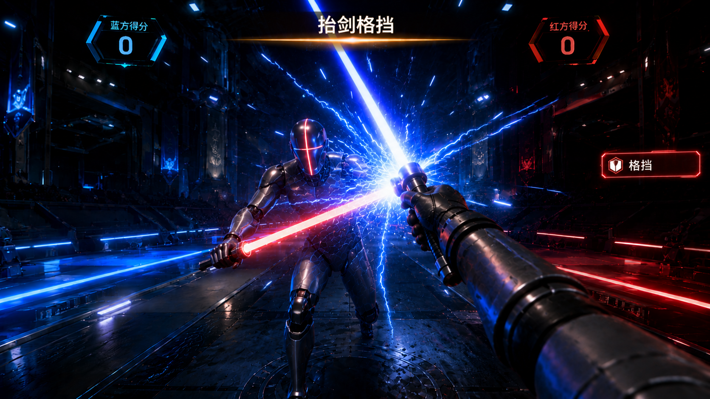
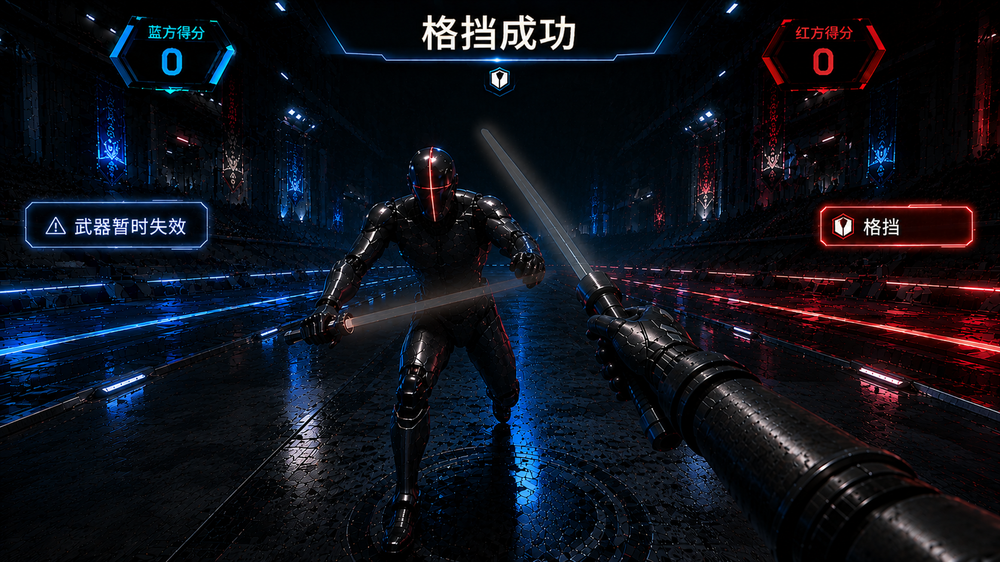
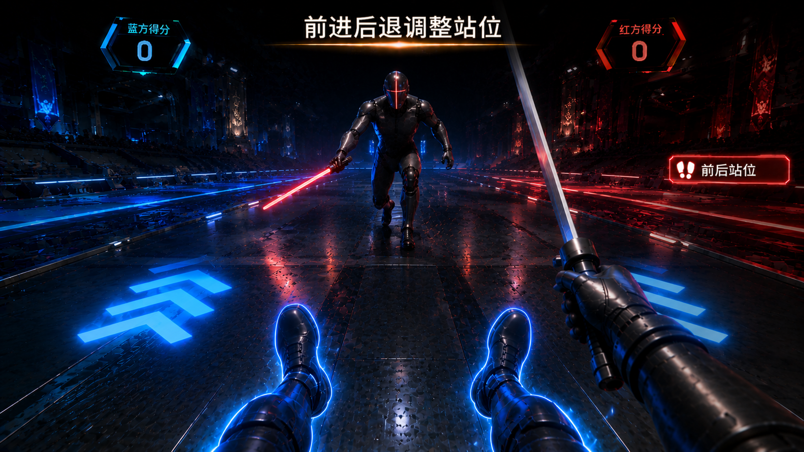
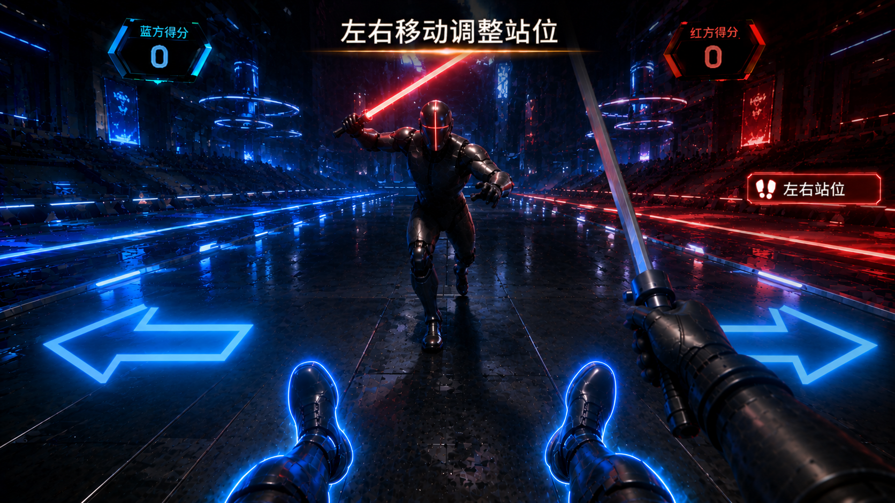

步骤1·场景介绍 参考图
欢迎来到雷霆击剑！你手持光剑，面对一个训练假人。刺中假人暴露的金色部位即可得分，同时注意格挡假人的反击。通过前后站位和左右躲闪，掌握击剑的步法精髓。准备好了吗？
🔊 语音播报
进入语：雷霆击剑！握紧淡蓝色光剑，对面训练假人会攻会防。亮金色的地方刺过去得分，蓝色护盾罩着的地方别碰。练好刺击、格挡、前后走位和左右闪避，你就是击剑手。开练！






| 类型 | 操作 | 提示 |
|---|---|---|
| ↕️前后站位 | 前移靠近/后撤远离 | 地面↑或↓ |
| ↔️左右躲闪 | 左横移/右横移 | 地面←或→ |
以下为「雷霆击剑」场景介绍及全局 UI 所需的美术资源清单，供美术团队制作参考。VR 第一人称视角，游戏引擎实时渲染风格，整体追求未来科技 + 光剑击剑 + 赛道竞技的视觉调性。
| 类别 | 资源 | 制作说明 |
|---|---|---|
| 竞技场主体 | 未来科技击剑赛道 | 直线型击剑赛道，长约 14m、宽约 2m，金属质感地板（深灰银色调），赛道中央有一条纵向中线（微弱白光），两侧边缘各有蓝红双色灯带贯穿全场。赛道表面有网格纹理，增强科技感 |
| 竞技场背景 | 暗色场馆空间 | 赛道两侧和远端为深色暗黑背景，空中漂浮微弱光点粒子（类似悬浮灰尘在光束中），营造沉浸感。背景不设具体观众或建筑细节，保持视觉焦点在赛道和假人上 |
| 灯光 | 赛道照明系统 | 顶部多盏条形灯沿赛道纵向排列，色温偏冷（约 5500K），灯光投射在金属地板上产生线状高光反射。赛道两侧蓝红灯带为环境主光源，左蓝右红形成冷暖对比 |
| 地面指示 | 方向箭头系统 | 赛道地板内置发光方向箭头（↑↓←→），平时暗隐。前后站位步骤时 ↑↓ 箭头以蓝色脉冲闪烁；左右躲闪步骤时 ←→ 箭头以蓝色脉冲闪烁。玩家成功移动后对应箭头变绿确认 |
| 类别 | 资源 | 制作说明 |
|---|---|---|
| 训练假人 | 银灰色金属假人 | 人形训练假人立于赛道远端，高约 1.8m，银灰色金属材质，身体表面有发光分区线——一条横向发光线将躯干分为上下半身。假人手中持一把光剑，手臂可切换攻击/防守姿态。假人无面部细节，头部为简约几何造型 |
| 分区标记 | 上身 / 下身暴露区域 | 假人身体上下半身可独立呈现金色暴露态（可攻击窗口）或蓝色护盾态（格挡中）。金色暴露区域带有脉冲🎯靶心标记闪烁（hologram 投射效果），蓝色护盾区域覆盖半透明能量护盾纹理。两种状态可随步骤在上下半身之间切换 |
| 玩家光剑 | 光剑 | 剑柄为深色金属圆柱形，长约 25cm；剑刃为半透明能量光束，淡蓝色，长约 90cm，带有微弱的电弧跳动效果和低沉的嗡嗡声视觉化光晕。刺击命中时剑刃短暂闪白 |
| 假人光剑 | AI 光剑 | 与玩家光剑造型一致，但剑刃颜色为橙红色以区分敌我。格挡教学时假人光剑主动刺出；格挡成功后假人光剑短暂闪烁变暗（失效状态），持续约 1.5 秒后恢复 |
| 类别 | 资源 | 制作说明 |
|---|---|---|
| 顶部提示板 | 文字提示板 | 屏幕顶部中央，半透明深色圆角矩形底（80% 不透明黑底 + 淡蓝微弱描边），白色文字居中。进入场景时从上方滑入 + 淡入动画（约 0.5 秒） |
| 右侧步骤面板 | 垂直步骤列表 | 屏幕右侧纵向排列，仅当前步骤高亮（淡蓝色发光边框 + 文字高亮），其余步骤暗隐。每步完成打 ✅ 并消失 |
| 得分区域 | HUD 得分显示 | 屏幕右上角显示当前得分数字，数字变化时有放大 + 回弹动画和金色微光 |
| 命中反馈 | ✅ 确认标记 | 刺中有效部位后，屏幕中央出现 ✅ 图标（金色，带粒子消散），伴随白闪 0.6 秒 |
| 类别 | 资源 | 制作说明 |
|---|---|---|
| 刺击命中 | 电光火花粒子 | 光剑刺中假人金色区域瞬间，碰撞点爆发蓝色闪电火花粒子（类似电路短路），粒子向外飞溅后快速消散（约 0.5 秒），伴随轻微屏幕震动 |
| 格挡碰撞 | 光剑碰撞特效 | 两把光剑格挡碰撞时，碰撞点迸发蓝白+橙红混合的电流放电特效，呈放射状扩散（约 0.5 秒），伴随明显的金属碰撞音视觉化波纹 |
| 格挡失效 | 假人光剑失效 | 格挡成功后，假人光剑剑刃从橙红色逐渐变暗→闪烁→变为灰色透明态，持续约 1.5 秒后恢复。失效期间假人上半身或下半身的护盾也会短暂消失，暴露金色区域 |
| 位移确认 | 箭头变色 + 脚步光效 | 玩家成功移动到指定位置后，地面方向箭头从蓝色脉冲变为绿色常亮，同时玩家脚下出现一圈绿色光环确认（持续约 0.5 秒后消散） |
| 用途 | 色值参考 | 说明 |
|---|---|---|
| 场景主调 | 暗黑/深灰 #1a1a2e ~ #2d2d44 | 赛道外围、背景空间、暗色区域 |
| 赛道地板 | 银灰金属 #7f8c8d ~ #bdc3c7 | 金属质感赛道，带网格纹理 |
| 赛道灯带（左蓝） | 蓝 #3498db / #5dade2 | 左侧赛道灯带、方向箭头默认色 |
| 赛道灯带（右红） | 红 #e74c3c / #ec7063 | 右侧赛道灯带 |
| 玩家光剑 | 淡蓝电光 #5dade2 → #d6eaf8 | 玩家光剑剑刃颜色 |
| 假人光剑 | 橙红 #e74c3c → #f5b041 | 假人光剑剑刃颜色，区分敌我 |
| 金色暴露区域 | 金 #f1c40f / #f39c12 | 假人可攻击区域高亮、🎯靶心 |
| 蓝色护盾 | 半透明蓝 rgba(52,152,219,0.4) | 假人格挡中的护盾覆盖层 |
| UI 底色 | 半透明黑 rgba(0,0,0,0.8) | 提示板、步骤面板底衬 |
| UI 高亮 | 淡蓝 #3498db 发光 | 当前步骤边框、得分文字 |
VR 第一人称视角 + 游戏引擎实时渲染；视觉基调类似《Beat Saber》的光剑美学 + 击剑赛道竞技感；光剑碰撞的电光特效为核心视觉记忆点；金色暴露区域与蓝色护盾的色彩对比要清晰可辨，确保玩家在快速攻防中一眼识别攻击窗口；核心设计原则：攻防状态即时可辨、光剑轨迹清晰、位移方向指示明确不迟疑。